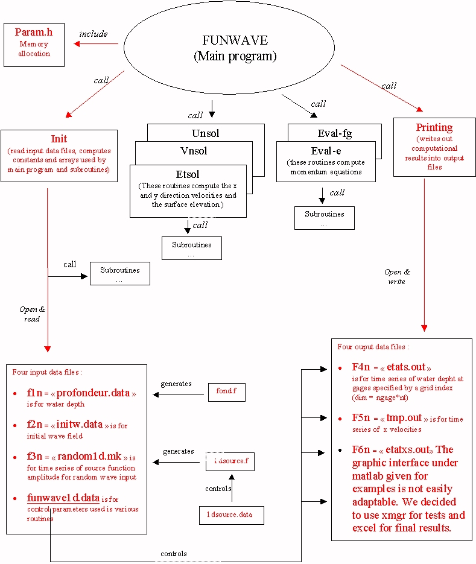
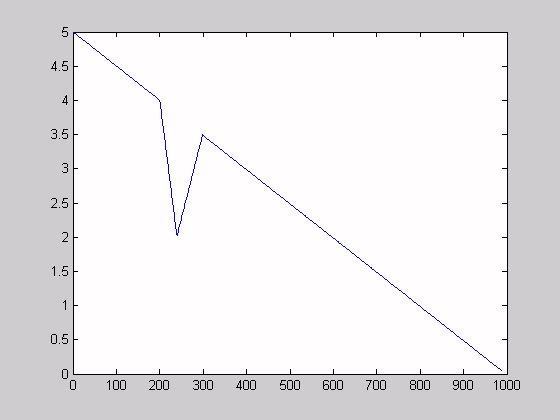

Running simulations with Funwave
(a step by step method)
Here is presented a procedure to run FUNWAVE with your own input
datas. Each step is completed by a concrete case chosen by our binom (see
example).
I. A look on the software organisation : focus on files
that have to be modified for running your simulations
Funwave does not have any graphical interface for
input datas. The user has to find the useful files to enter his datas but
also to visualize his results. These files are quite the only to be modified.
In the following scheme, they are colored in red.

Scheme.1 : a basic software organigram
II. How to run your own simulations :
Advice : In order to get clear with
your own data, copy the already existing EXAMPLE4.1 as a new directory.
You can then keep the all useful files and entering your own parameters.
1) Fill your input files step by step
-
Create and enter
your bathymetry : as shown in scheme.1, Init
opens
and reads the water depth file profondeur.data
(f1n).Originally, a Fortran program reads the some of the
control parameter file funwave1d.data.
It then generates one of the four examples depth grid. However you can
create your own profile with a Fortran or Matlab program. After writing
it, make sure that it is writed in profondeur.data
(f1n)
 Caution
: Make sure that the memory allocation is then enough. For this, go to
param.h
and check that
iq is greater than the number of points (mx) you
generated with your program. Moreover, be careful that mx in funwave1d.datais
now really equal to the number of points generated.
Caution
: Make sure that the memory allocation is then enough. For this, go to
param.h
and check that
iq is greater than the number of points (mx) you
generated with your program. Moreover, be careful that mx in funwave1d.datais
now really equal to the number of points generated.
Example : writing a simple Matlab program
fond.m,
an artificial reef was generated (see graph.1). This profile created a
990 points grid. It was then necessary to increase the iq value (70 000)
in param.h and precise mx (990) in
funwave1d.data.

Graph.1 : depth profile genrated by fond.m.
As expected by the program, the water depth is positive defined
-
Enter the initial water depth and velocity components
values : these input datas are contained in initw.data
(f2n). The Fortran program initw.fallows
to generate these values. By default they are all equal to zero.
Caution,
example
variables were set zero.
However it was necesary to adapt initw.data to the new number of points
generated in profondeur.data (990). In order to get at least mx
points quickly, following commands were done with Unix:
- nota: initw.data cointained initially W lines
of zeros, instead of the X required. Let's modified its size:
- cat initw.data > new.data create a new file
similar to initw.data
- cat new.data >> new.data doubles the size
of new data (command repeated to get 2084 points >> mx = 990)
- kill initw.data and "recall" new.data initw.data
A suficient size file was then created for
our initial values.
-
Generate and enter the time series of source function
amplitude: here you can choose to enter a spectrum (imeth=1)
or to enter an time series of measured water depth (imeth=2). In both case
these input datas are contained in random1d.mk
(f3n). The Fortran program 1dsource.f
allows to generate these values. Moreover a separate input data file 1dsource
.data is required to run 1dsource.f.
Example
:
in 1dsource .data, we specify
in $data0
imeth = 1 to select the generate the source
function time series by entering an input spectrum of the water depth
in $data1
f1 = 5 and f2n = 5 are respectively our lowest
and higest freqsuency components to be used in the spectrum
nf = 1 is the number of frequency components
between f1 and f2n
e.g. we choose to generate monochromatic wave
in order to simplify our study
Nota :
1dsource.data is shown as it can be found in the software. If
imeth = 2 would have been chosen, an input time series of measured
water deepth would have been required. In this case, control parameters
which have to be specified in $data2 are explained.
-
Fill the other general parameters : funwave1d.data
contains control parameters which are used through the program. Some of
them are used by the input files mentioned above and have to be carefully
filled, see the following example. Other will be used for the output files
(see paragrph 2) ) and lasts would be required for a more advanced used
of the software.
Example :
control parameters that have to be modified in funwave1d.data
according
to our input files :
a0 = 1.5 is the input wave amplitudes in metre
h0 = 5 is the constant water depth in meters over
the wave generation
tpd = 9 is the wave period for chronomatic waves
dx = 0.00001 is the space discretization in meters
for the x direction (ours is obviously very small but necessary according
to the problems coped encountered)
mx = 990 number of grid point in the x direction
nt = 40 000 number of time step to the program
to run
f1n, f2n, f3n check that these input files are
corectly refered (profondeur.data, initw.data, r2d470.dat)
cbrk = 1.2 is a typical value for wave breaking
inequations
cb_bt = 0 bottom friction
2) Control the different kinds of result storages thanks
with the input file funwave1d.data
Indeed, some paramaters located in funwave1d.data
allow
the user to control the time steps for the spatial profiles, or
the gage location for the time series. There are finally four output
files which can be controlled.
-
What king of datas can I register? In which files
are they located? How can I can control them?
| Type of datas |
File names |
Parameters in funwave1d.data allowing
to control this file |
| time series of the water depth elevation for
specified gages |
f4n = etats.out |
in $data2 : ngage specifies the gage
number and ixg their locations |
| time series of x direction velocity |
f5n = temp.out |
|
| spatial profile of the water depth at 6 time
steps specified |
f6n = etaxs.out |
in $data2 : itg (6 values) specifies
the time steps where spatial profiles are stored |
| spatial profile for a specified interval time |
f7n = etaxt.out |
in $data1 : itbgn, itend, itdel
specify
the beginning, ending and interval numbers of time step |
Example :
all the paramaters mentionned above were modified. funwave1d.data
allows to have a look on this input file as it can be found in the software.
Notice that parameters mentionned in the paragraph 1) have been filled.
Resting parameters were set at their first values.
3) Run the program
Before running the program, being located in FUNWAVE1D,
compile
all the Fortan files. You have to be sured that FUNWAVE will use your new
directory datas : enter into the directory you created and run the
program by using the command
../initw
../1dsource
../funwave
4) How to visualize the results
The matlab output interface proposed in funwave was not so easy to use.
We chose the xmgr plotting software to view the output files. Final
results are presented with Excel.